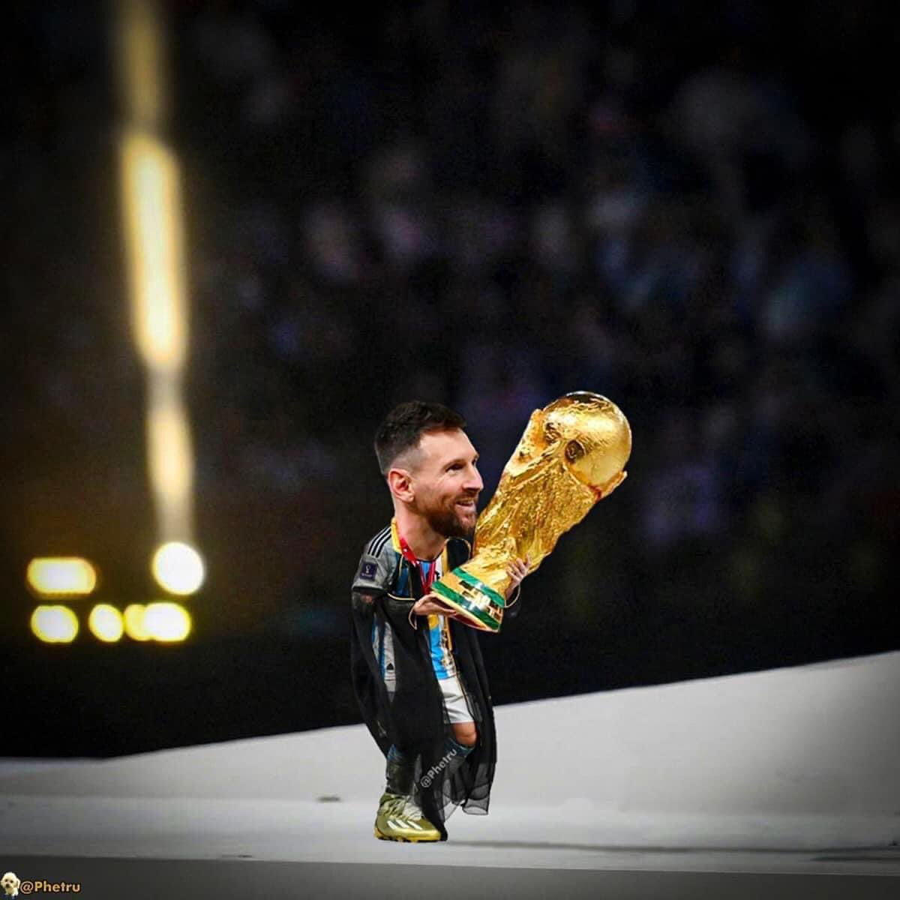

La Copa Mundial de la FIFA Uruguay 1930 fue la primera edición del Campeonato Mundial de Fútbol organizado por la FIFA. Se desarrolló en Uruguay entre el 13 y el 30 de julio de 1930. La FIFA decidió entregar la organización del torneo a Uruguay en conmemoración del centenario de la Jura de la Constitución, que la nación celebraba durante julio de ese mismo año, entre otros motivos.
En el torneo participaron 13 selecciones nacionales (12 invitadas más el organizador), divididas en 4 grupos: 3 grupos de 3 equipos y un grupo de 4 equipos. Los primeros dos encuentros en la historia de la Copa Mundial tuvieron lugar simultáneamente el 13 de julio, fecha en la que Estados Unidos se impuso a Bélgica por 3:0, mientras que Francia superó a México por 4:1. El primer tanto de la competición fue anotado por el jugador francés Lucien Laurent.
Las selecciones de Argentina, Estados Unidos, Uruguay y Yugoslavia accedieron a las semifinales tras imponerse en sus respectivos grupos. En la final, el anfitrión Uruguay venció a Argentina por 4:2, ante más de 68 000 espectadores, ganando su primer título mundial organizado por la FIFA.
La Copa Mundial de la FIFA Argentina 1978 fue la undécima edición de la Copa Mundial de Fútbol y se desarrolló en Argentina, entre el 1 de junio y el 25 de junio de 1978. La Copa del Mundo volvía así a Sudamérica por primera vez desde Chile en 1962. El torneo fue disputado en seis estadios, repartidos en las ciudades de Buenos Aires, Rosario, Mar del Plata, Córdoba y Mendoza.
En el torneo no jugaron el joven Diego Armando Maradona, en ese momento con 17 años, ni la estrella neerlandesa Johan Cruyff, pero sí lo hicieron otros consagrados futbolistas internacionales de la época como Johan Neeskens, Teófilo Cubillas, Zico, Dino Zoff y Mario Kempes, además de Michel Platini, Karl-Heinz Rummenigge y Paolo Rossi, entre otros valores destacados.
La Copa Mundial de la FIFA México 1986 fue la decimotercera edición de la Copa Mundial de Fútbol, que se desarrolló entre el 31 de mayo y el 29 de junio. México se convirtió en el primer país en celebrar dos veces una Copa del Mundo, cuando el Comité Ejecutivo de la FIFA, tras una reunión en Estocolmo, Suecia en mayo de 1983, decidió sustituir la sede seleccionada en 1974, Colombia, que tuvo que declinar en noviembre de 1982 ante la imposibilidad de cumplir con los requerimientos que FIFA exigió para celebrar el evento.
En dos partidos de los cuartos de final del torneo sucedieron hechos destacados y sin precedentes en el fútbol: 1 en el partido Argentina-Inglaterra, Diego Maradona (que en el primer tiempo fue golpeado duramente con un codazo por Terry Butcher, que el árbitro no vio) convirtió dos de sus goles más famosos, uno que consiguió tocando el balón con la mano que el árbitro dio por legal y que el mismo jugador aceptó después al afirmar que había sido la mano de Dios; minutos después Maradona zarpó desde media cancha burlando a cuanto adversario se cruzaba en su camino consiguiendo de esta forma el mejor gol de los mundiales y uno de los mejores en la historia del fútbol, conocido como el Gol del Siglo. Por su parte, en la definición por tiros desde el punto penal del partido Brasil-Francia, Bruno Bellone erró un disparo al estrellarse el balón contra el poste, pero al rebotar en el cuerpo del arquero Carlos Gallo entró al arco, siéndole concedido.2 Los brasileños protestaron para que fuera anulado, pero el árbitro rumano Ioan Igna ratificó su decisión, que posteriormente fue avalada por la International Board.
La Copa Mundial de la FIFA Italia 1990 fue la decimocuarta edición de la Copa Mundial de Fútbol. Se desarrolló en Italia, entre el 8 de junio y el 8 de julio de 1990.
Italia se convirtió en el segundo país en celebrar una Copa Mundial en dos ocasiones distintas, ya que había organizado el torneo en 1934. Un total de 24 selecciones nacionales participaron en el evento, en donde hubo varias sorpresas, como la participación de Camerún, que se convirtió en el primer equipo africano en llegar a los cuartos de final, llegando su colectivo a ser conocido como "los leones indomables". La final fue jugada por segunda vez consecutiva por Argentina y Alemania Federal, poco antes de su unificación con Alemania Democrática. Ganaron los alemanes por 1-0 gracias a un polémico penal pitado por el uruguayo nacionalizado mexicano Edgardo Codesal Méndez en el minuto 83. Décadas más tarde, Codesal se defendió justificando que su decisión fue la correcta,1 sin embargo el jugador alemán Lothar Matthäus argumentó que la falta estuvo mal cobrada
La Copa Mundial de la FIFA Brasil 2014 (en portugués: Copa do Mundo FIFA de 2014) fue la vigésima edición de la Copa Mundial de Fútbol. Se realizó en Brasil entre el 12 de junio y el 13 de julio de 2014, por segunda vez en dicho país, tras el campeonato de 1950.
Después de que el presidente de la FIFA, Joseph Blatter, estableció en 2001 el criterio de rotación continental de la sede del torneo, América del Sur fue seleccionada en 2004 para celebrar en 2014 su primera copa desde Argentina 1978. Pese al entusiasmo inicial de algunos países, solo Brasil y Colombia presentaron sus candidaturas oficiales antes del cierre del plazo, en diciembre de 2006. Algunos meses después, Colombia retiró su candidatura y quedó Brasil como único postulante. El 30 de octubre de 2007, la FIFA lo designó, de manera oficial, como el país sede de la Copa Mundial de Fútbol de 2014
Que mas se podría decir de la copa del mundo 2022 ? Esta que trajo una vez mas la alegría al pueblo argentino y logro uno de los festejos mas grandes de todos los tiempos. Muchachos ahora nos volvimos a ilusionar…!
